CTRL+ALT+DLT: Graph-Based QA Framework
Mid Report Presentation — IIIT Hyderabad
Faithful Multilingual Question Answering over Documents
Team: Akshat Kotadia, Gaurav Patel, Om Mehra, Hardik Kothari
Press ← / → or Space to navigate slides. 'F' for fullscreen.
Abstract — Key ideas
- Document → sentences as nodes (Document Reasoning Graph, DRG)
- Span Graph for entities / noun phrases for fine-grained reasoning
- Hybrid retrieval: BM25 + dense embeddings + centrality
- Graph traversal + transformer reader for extractive answers
- Interpretable reasoning paths (provenance & evidence)
- Designed for long documents and multi-hop QA
Pipeline Overview
- Document ingestion → sentence segmentation
- Build DRG (sentence embeddings, adjacency, semantic edges)
- Build Span Graph (entities, noun phrases)
- Hybrid retrieval (BM25 + dense + centrality)
- Graph traversal & expansion (depth-limited multi-hop)
- Extractive QA reader + provenance
Graphs & Retrieval
- Edge types: adjacency, section, semantic, discourse, entity
- Centrality: PageRank + Betweenness combined
- Traversal: prioritize discourse & entity edges
- Hybrid scoring weights: sem 0.50 / lex 0.30 / cent 0.20
- Overlap bonuses and re-ranking with cross-encoder
Dataset & Evaluation Subset
- HotpotQA used as benchmark (multi-hop)
- Stratified subset: 1,000 examples per difficulty (easy, medium, hard) — 3,000 total
- Sampling seed: 42 (reproducible)
Run command:
python hotpot_dataset.py --dataset hotpot_train_v1.1.json --num 3000 --level all --seed 42
Key Findings
- Subset evaluation (3k examples): EM ≈ 41 %, F1 ≈ 59 %
- Hybrid retriever boosts EM by ~7 % over BM25-only
- Graph-guided reasoning adds further +4 % EM and improves Recall@5 to 82 %
- Average reasoning depth ≈ 2.3 hops; avg. time ≈ 1.8 s/question
Evaluation Metrics (subset)
| Mode | EM | F1 | Recall@5 |
|---|---|---|---|
| BM25 | 38% | 54% | 70% |
| Dense | 52% | 60% | 75% |
| Hybrid | 62% | 69% | 80% |
| Graph-guided | 68% | 74% | 82% |
Conclusion
- Graph-based hybrid retrieval improves QA accuracy on long documents.
- System provides explainable reasoning via explicit graphs.
- Faithful, interpretable answers for multi-hop QA.
Future Work
- Integrate external knowledge sources
- Support cross-document reasoning
- Optimize traversal heuristics
- Expand evaluation to full dataset
Team & Acknowledgements
Akshat Kotadia
IIIT Hyderabad
2025201005
Gaurav Patel
IIIT Hyderabad
2025201065
Om Mehra
IIIT Hyderabad
2025201008
Hardik Kothari
IIIT Hyderabad
2025201046
🙏 Thank You!
Questions & Discussion
CTRL+ALT+DLT — Graph-Based QA Framework
Presented by:
Akshat Kotadia, Gaurav Patel, Om Mehra, Hardik Kothari
Akshat Kotadia, Gaurav Patel, Om Mehra, Hardik Kothari
Methodology — Highlights
- Precompute sentence/span embeddings with sentence-transformers/all-mpnet-base-v2
- Seed retrieval → depth-limited expansion (depth=2, top-5 neighbors)
- Cross-encoder re-rank and extractive QA (deepset/deberta-v3-large-squad2)
Evaluation Metrics
- Exact Match (EM) and token-level F1
- Recall@k for retrieval diagnostics
- Graph reasoning depth and average time
Results — Key metrics
Evaluated on stratified 3,000-example subset (1k per difficulty)
Overall (sample)
EM: 45% F1: 62%
Per-level (sample)
Easy: EM 52% · Medium: EM 44% · Hard: EM 29%
System Architecture
DRG → SpanGraph → Reasoner → QA

See full PDF: architecture_diagram.pdf
Limitations
- Heuristic weights and traversal depth may limit generalization
- Quality depends on preprocessing (segmentation, span extraction)
- Experiments run on a reduced subset (1k per difficulty) due to compute
Press ← / →, Space to navigate · F fullscreen